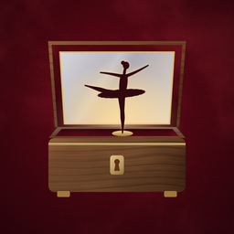

A music box for iPhone. On iPhone Duo, your phone is the box.
Questions, a problem, or an idea? Write to me and I'll answer as soon as I can.
Wind the brass key with a clockwise circular movement: the marks around it light up as the spring winds. Then open the lid. A full wind plays for about a minute and a half and slows down as the spring runs out, like a real music box.
On iPhone Duo, open and close the phone: the hinge is the lid. On other iPhones, tap the lid or lift it with your finger; let it fall to shut it. Placing the phone face down always shuts the lid.
Check that the key is wound and the lid is open, and turn up the volume. Lullabox plays even with the Ring/Silent switch set to silent.
Yes: tap one of the brass plates to change the cylinder. All melodies are in the public domain.
Lullabox does not collect, store or share any personal data.
If this ever changes, this page will be updated first. Last updated: 19 October 2026.
Contact: ivojuniorbettini@gmail.com
Domande, un problema o un'idea? Scrivimi e ti rispondo appena posso.
Gira la chiave d'ottone con un movimento circolare in senso orario: le tacche intorno si accendono mentre la molla si carica. Poi apri il coperchio. Una carica completa suona per circa un minuto e mezzo e rallenta quando la molla si scarica, come in un carillon vero.
Su iPhone Duo apri e chiudi il telefono: la cerniera è il coperchio. Sugli altri iPhone tocca il coperchio o sollevalo col dito; lascialo cadere per chiuderlo. Il telefono a faccia in giù chiude sempre il coperchio.
Controlla che la chiave sia carica e il coperchio aperto, e alza il volume. Lullabox suona anche con l'interruttore suoneria/silenzioso su silenzioso.
Sì: tocca una delle targhette d'ottone per cambiare cilindro. Tutte le melodie sono di pubblico dominio.
Lullabox non raccoglie, non conserva e non condivide alcun dato personale.
Se un giorno cambiasse qualcosa, questa pagina verrà aggiornata prima. Ultimo aggiornamento: 19 ottobre 2026.
Contatto: ivojuniorbettini@gmail.com